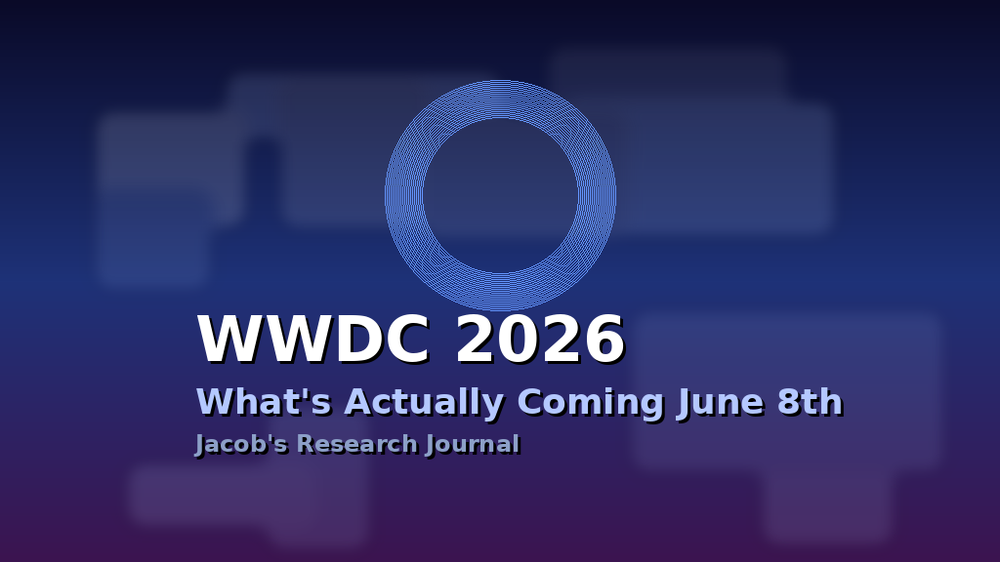
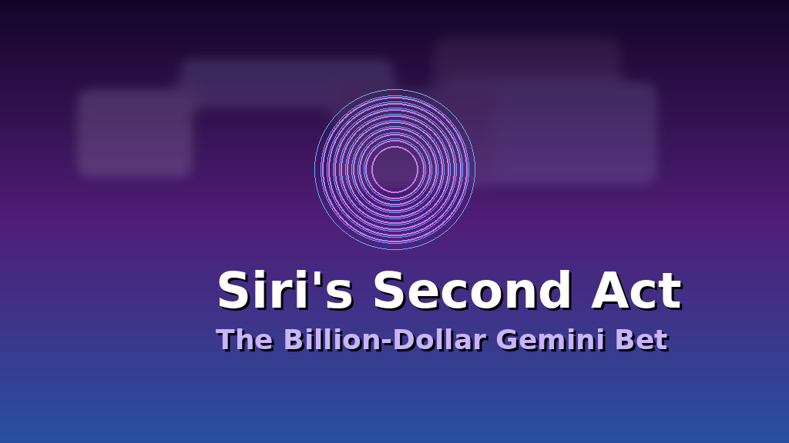

Apple confirmed it two weeks ago: WWDC 2026 runs June 8 through 12, with the keynote kicking off Monday morning at Apple Park. On paper, it's the same format we've seen since 2020 — mostly online, a few thousand lottery winners in person, software betas by the afternoon. But the stakes this year are genuinely different.
Last year Apple spent WWDC introducing Liquid Glass and playing catch-up on AI promises that had been piling up since the original Apple Intelligence announcement at WWDC 2024. This year, the company has to prove that the billions it's spending on AI infrastructure are producing something people actually want to use. And the centerpiece of that argument has a name you already know: Siri.
I've spent the last week pulling together every credible source I can find — Bloomberg's Mark Gurman, Apple's own press materials, supply chain reporting, developer leaks, and community speculation — to build the most complete picture I can of what's coming. Here's what I found, organized by confidence level and sourced throughout.

The Main Event: Siri's Second Act
If there's one story at WWDC this year, it's Siri. And for the first time in Siri's 15-year existence, there's real reason to pay attention.
In January, Apple and Google announced a multi-year partnership to build the next generation of Apple Foundation Models on Google's Gemini. Bloomberg's Gurman reported the deal is worth roughly $1 billion per year. That's not a licensing fee for a chat widget — that's infrastructure-level commitment. Apple is rebuilding its AI backbone on Gemini, processed through its own Private Cloud Compute infrastructure so the company can keep its privacy story intact.
The technical architecture, which Apple partially explained in January, is a two-tier system. Simple queries — about 40% of interactions — are handled entirely by a 3-billion-parameter on-device model running on A18 Pro and M4 chips, processing in under 200 milliseconds without ever leaving the device. Complex queries requiring LLM-level reasoning get routed to Apple's Private Cloud Compute servers, where Gemini models run in hardware-isolated, stateless environments. Google provides the intelligence; Apple controls the data pipeline. It's a clever arrangement that lets Apple ship frontier AI capability without abandoning its privacy positioning.
But the bigger reveal expected at WWDC is the chatbot version of Siri. According to MacRumors and multiple corroborating reports, Apple is building a full conversational interface — think ChatGPT or Claude — accessible via Siri's existing entry points (wake word, side button, typing). The chatbot will feature persistent conversation history, web search, file analysis, image generation through Image Playground, and what Apple has been internally calling "world knowledge" capabilities.
There's also the on-device intelligence layer that's harder to demo on stage but arguably more important. Siri is gaining personal context awareness — the ability to pull from your emails, messages, files, and photos to answer questions like "show me the files Eric sent me last week." Plus on-screen awareness, where Siri can see and act on whatever you're looking at. These features were originally promised for iOS 18 and have been in various stages of development since. WWDC 2026 is where they're supposed to actually ship.

iOS 27: The Snow Leopard Strategy
Mark Gurman has been consistent on this one: iOS 27 is a "Snow Leopard" update. If you remember the Mac OS X era, Snow Leopard (10.6) followed the ambitious Leopard (10.5) with a release focused almost entirely on stability, performance, and cleaning up technical debt. No flashy features. Just making everything work better.
That's exactly what iOS 27 is shaping up to be. After iOS 26 introduced the biggest visual redesign since iOS 7 with Liquid Glass, Apple's software engineers are reportedly spending this cycle eradicating bugs, replacing old code, and optimizing performance. The practical upshot: better battery life on older iPhones, smoother animations, fewer crashes, faster app launches. The kind of improvements that don't make for exciting keynote slides but make your phone feel noticeably better to use.
That said, there are a few concrete feature additions worth tracking:
Liquid Glass refinements. The new design language introduced in iOS 26 is reportedly getting a tuning pass, with MacRumors reporting a possible system-wide adjustment slider that would let users control the intensity of the translucency effects. If you've found Liquid Glass too busy, this would be the answer.
Foldable iPhone groundwork. iOS 27 is expected to include interfaces and experiences specifically designed for a larger foldable screen — side-by-side app support, new sidebar functionality, form-factor-specific layouts. The foldable iPhone itself isn't expected until the fall hardware event, but the software will be previewed at WWDC. This is Apple laying the foundation months ahead of the hardware launch.
AI-powered Calendar. A lower-confidence rumor, but multiple sources suggest the Calendar app is getting AI capabilities — likely smart scheduling suggestions and natural language event creation powered by Apple Intelligence.
For Developers: Core AI Replaces Core ML
This one flew under the mainstream radar but it's a big deal for the developer community. Apple is replacing Core ML with a new framework called Core AI at WWDC 2026.
The naming shift from "ML" to "AI" isn't just marketing — it signals a move from a framework designed primarily for running predictive models to one that supports conversational, generative, and agentic AI systems. Core AI is reportedly designed to help developers integrate third-party AI models into their apps, with speculation that it may support the Model Context Protocol (MCP) as a standardized integration layer.
Core ML isn't disappearing overnight — both frameworks are expected to coexist during a transition period — but the direction is clear. Apple is building the plumbing for an ecosystem where every app can be AI-powered, not just the ones Apple builds itself.
Hardware at a Software Show
WWDC is a software event, but Apple has a habit of slipping hardware announcements in when the timing works. This year, the candidates are:
Mac Studio with M5 Max and M5 Ultra. This is the most likely hardware announcement, per MacRumors and supply chain reporting. The M5 Ultra would be Apple's first Ultra chip since the M3 generation, featuring up to an 80-core GPU, Thunderbolt 5, and up to 96GB of unified memory. For creative professionals and AI developers running local models, this is the machine to watch.
Mac mini with M5 and M5 Pro. A spec bump for the entry-level and mid-tier Mac mini. Less dramatic but it would bring the full desktop lineup to the M5 generation.
iMac with M5. Rumored to include new color options alongside the chip upgrade. A relatively straightforward update.
Entry-level iPad with A18 chip. Bringing Apple Intelligence capability to the cheapest iPad in the lineup.
The HomePad Question
Apple's rumored smart home display — variously called HomePad, HomeHub, or Apple Home Hub — is the wildcard. Reports describe a 7-inch square touchscreen device with an A18 chip, a TrueDepth camera with multi-user facial recognition, wall-mount and dock options, and deep HomeKit integration for controlling your home, running FaceTime, and displaying personalized information based on who walks up to it. The Apple Post reported just two days ago that the device is "ready to ship."
But here's the catch: multiple sources, including Macworld, report that the HomePad has been repeatedly delayed because Apple wants it to launch alongside the more capable version of Siri. If the chatbot Siri isn't ready until iOS 27 ships in September, the HomePad likely gets a preview at WWDC but doesn't actually go on sale until fall. Expected price: around $350.
The Confidence Tiers
Not all rumors are created equal. Here's my assessment of what's coming, organized by how confident I am in the sourcing:
| Prediction | Confidence | Key Source |
|---|---|---|
| iOS 27, macOS 27, watchOS 27, etc. previewed | 🟢 Confirmed | Apple press release |
| Gemini-powered Siri improvements across platforms | 🟢 Very High | Apple/Google joint statement, Bloomberg |
| iOS 27 as "Snow Leopard" stability release | 🟢 Very High | Mark Gurman, Bloomberg |
| Third-party AI Extensions for Siri | 🟡 High | MacRumors, multiple corroborating reports |
| Core AI framework replacing Core ML | 🟡 High | 9to5Mac, AppleInsider |
| Siri chatbot interface debut | 🟡 High | MacRumors, TechTimes, multiple outlets |
| Mac Studio with M5 Max/Ultra | 🟡 High | MacRumors roundup, supply chain |
| Foldable iPhone software features in iOS 27 | 🟡 Medium-High | Bloomberg, MacRumors |
| HomePad preview (fall ship date) | 🟠 Medium | The Apple Post, Macworld, Kosutami |
| Liquid Glass adjustment slider | 🟠 Medium | MacRumors rumor reporting |
| AI-powered Calendar app | 🔴 Low-Medium | Single-source rumor |
| Siri visual redesign (animated Finder-style logo) | 🔴 Low | Unverified community speculation |
What I'm Actually Watching
Beyond the feature checklist, there are three meta-questions that will determine whether WWDC 2026 is a pivotal moment or just another Tuesday in Cupertino.
Does chatbot Siri actually feel competitive? Apple has spent over a billion dollars on the Gemini partnership and years of engineering on the new architecture. If the demo on June 8th shows a Siri that can hold a genuine conversation, search the web intelligently, remember context, and act across apps — if it feels like it belongs in the same conversation as ChatGPT and Claude — that changes the trajectory of Apple's AI story completely. If it feels like a skin on top of Google's API with the usual Siri jank... that's a much bigger problem than any single feature miss.
How open is the Extensions system? The idea of routing Siri queries to third-party AI providers is genuinely exciting. But the devil is in the implementation. Does "Extensions" mean deep integration where Claude or Gemini can access your on-device context? Or does it mean a glorified web view that opens when Siri gives up? The difference between those two outcomes is the difference between Apple becoming the AI platform and Apple being a gatekeeper that AI companies have to work around.
Is Core AI a real framework or a rebrand? Apple has a mixed history with developer frameworks — some (SwiftUI, Combine) genuinely changed how people build apps, while others (ClassKit, SiriKit) launched with fanfare and quietly stagnated. Core AI needs to be in the first category. If it ships with real third-party model support, sensible APIs, and the kind of documentation Apple's developer relations team is capable of producing at their best, it could make every iOS app an AI app within a year. That's the promise. We'll see if the reality matches.
Sixty-four days out. I'll be updating this analysis as new information surfaces — and I'll be glued to the keynote livestream on June 8th. This is the year Apple has to prove its AI strategy is real. No more "coming later this year." The clock is running.